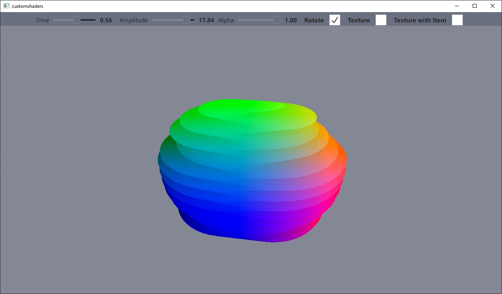

Qt Quick 3D - Custom Shaders Example
Demonstrates the use of custom vertex and fragment shaders.
This example demonstrates using a material with completely custom vertex and fragment shader code.

This example is the counterpart to the custommaterials example, which demonstrates the other group of custom materials: shaded materials where the shader code snippet augments a PrincipledMaterial, rather than replacing it.
Implementing a custom material
In this example, a mesh is deformed by the vertex shader according to a sine function. The end result is controlled by two sliders corresponding to the time and amplitude values of the sine function.
The fragment shader is used to color the mesh according to the position values of the vertices. There are two fragment shaders included: one with and without texturing. The textured version samples a texture that is source from either an image file, or from a live Qt Quick layer.
The material does not participate in the default lighting or shadowing system, and therefore has its shadingMode property set to CustomMaterial.Unshaded.
See CustomMaterial for a detailed description of custom material capabilities.
CustomMaterial { id: root property real time: 0.0 property real amplitude: 5.0 property real alpha: 1.0 property bool texturing: false property bool textureFromItem: false property Item texSrc Texture { id: texFromFile source: "qt_logo.png" } Texture { id: texFromItem sourceItem: root.texSrc } property TextureInput tex: TextureInput { enabled: root.texturing texture: root.textureFromItem ? texFromItem : texFromFile } shadingMode: CustomMaterial.Unshaded sourceBlend: root.alpha < 1.0 ? CustomMaterial.SrcAlpha : CustomMaterial.NoBlend destinationBlend: root.alpha < 1.0 ? CustomMaterial.OneMinusSrcAlpha : CustomMaterial.NoBlend cullMode: CustomMaterial.BackFaceCulling vertexShader: "example.vert" fragmentShader: root.texturing ? "example_tex.frag" : "example.frag" }
Using a custom material
A custom material using custom shaders is used the same way as any other material. The uniforms in the shader can be easily updated through QML property bindings.
Model { position: Qt.vector3d(0, 0, 0) NumberAnimation on eulerRotation.y { from: 0 to: 360 duration: 3000 loops: -1 running: control.animateRotation } scale: Qt.vector3d(2, 2, 2) source: "#Sphere" materials: [ ExampleMaterial { id: exampleMaterial time: control.time amplitude: control.amplitude alpha: control.alpha texturing: control.texturing textureFromItem: control.textureFromItem texSrc: Rectangle { layer.enabled: true layer.textureMirroring: ShaderEffectSource.NoMirroring visible: false SequentialAnimation on color { ColorAnimation { from: "black"; to: "yellow"; duration: 2000 } ColorAnimation { from: "yellow"; to: "cyan"; duration: 1000 } ColorAnimation { from: "cyan"; to: "black"; duration: 500 } loops: -1 } width: 512 height: 512 Image { source: "qt_logo.png" anchors.centerIn: parent } } } ] }
Files:
- customshaders/CMakeLists.txt
- customshaders/Example/ExampleMaterial.qml
- customshaders/Example/MaterialControl.qml
- customshaders/Example/customshaders_qml_module_dir_map.qrc
- customshaders/Example/example.frag
- customshaders/Example/example.vert
- customshaders/Example/example_tex.frag
- customshaders/Example/main.qml
- customshaders/Example/qmldir
- customshaders/ExampleMaterial.qml
- customshaders/MaterialControl.qml
- customshaders/customshaders.pro
- customshaders/example.frag
- customshaders/example.vert
- customshaders/example_tex.frag
- customshaders/main.cpp
- customshaders/main.qml
- customshaders/resources.qrc
Images:
{kind=link}
{kind=link}